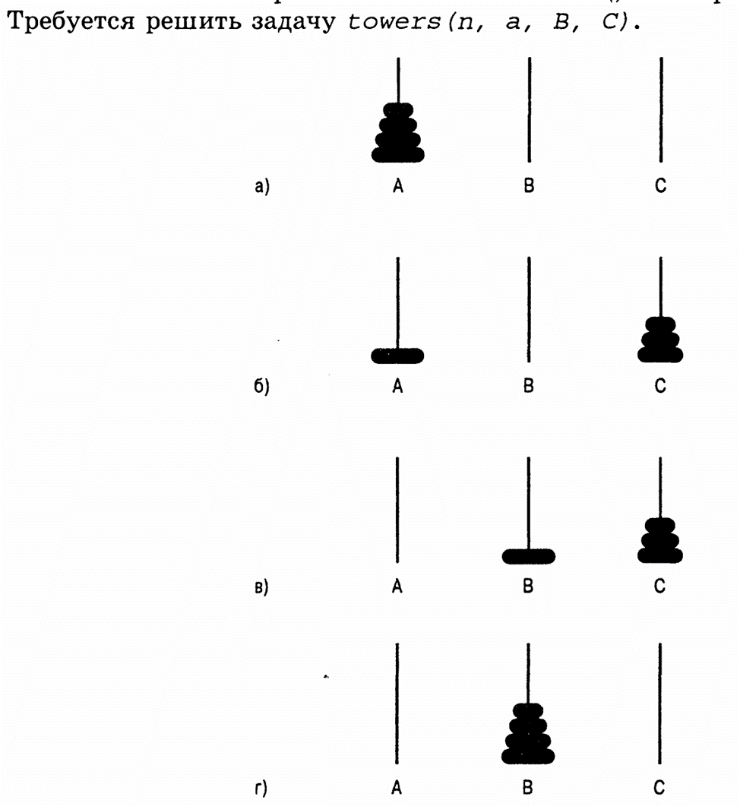

// Рекурсивный бинарный поиск в словаре.
if (// Словарь состоит из одной страницы.)
// Ищем слово на этой странице.
else
{
// Открываем словарь посередине. Определяем, какая половина словаря содержит искомое слово.
if (// Слово содержится в первой половине.)
// Выполняем поиск слова в первой половине.
else
// Выполняем поиск слова во второй половине словаря словаря.
}
search(in aDictionary: Dictionary, in word: string)
if // Cловарь — «aDictionary» — состоит из одной страницы.
// Ищем слово на этой странице.
else
{
// Открываем словарь — «aDictionary» — посередине. Определяем, какая половина словаря содержит искомое слово
if (// Слово — «word» — содержится в первой половине словаря — «aDictionary».)
search (// Первая половина условия словаря — «aDictionary» — «word».)
else
search (// Вторая половина условия словаря — «aDictionary» — «word».)
}
Итеративное определение факториала
factorial(n) = n * (n - 1) * (n - 2) ... * 1 // Для любого целого числа со значением — «n > 0»
factorial(0) = 1
Рекуррентное отношение
factorial(n) = n * [(n - 1) * (n - 2) ... * 1] = n * factorial(n - 1)
int fact(int n)
// Вычисляет факториал неотрицательного целого числа. Предусловие: число со значением — «n» — должно быть неотрицательным. Постусловие: возвращает факториал числа со значением — «n»; само данное число не изменяется.
{
if (n == 0)
return 1;
else
return n * fact(n - 1);
} // Конец функции — «fact».
if (n == 0)
return 1;
else
return n * fact(n - 1);
Инварианты рекурсивных функций имеют не меньшую важность, чем инварианты итеративных функций, причём часто они проще своих итеративных аналогов.
int fact(int n)
// Предусловие: число со значением — «n» — должно быть неотрицательным. Постусловие: возвращает факториал данного числа.
{
if (n == 0)
return 1;
else // Инвариант: n > 0, поэтому n - 1 >= 0. Следовательно, вызов функции — «fact(n - 1)» — возвращает значение — «(n - 1)»!
return n * fact(n - 1); // n * (n - 1)! = n!
} // Конец функции — «fact».
Как записать в обратном порядке строку, состоящую из символов с количеством — «n» — если известно, как это можно сделать для строки, состоящей из символов с количеством — «n - 1».
Функция — «writeBackward» — записывает строку в обратном порядке.
if (// Строка пуста.)
// Ничего не делаем: это базовая задача.
else
{
Записываем последний символ строки — «s».
writeBackward (// строка — «s» — без последнего символа.)
}
void writeBackward (string s, int size)
// Записывает строку символов в обратном порядке. Предусловие: строка — «s» — содержит символы с количеством — «size» (size >= 0). Постусловие: строка — «s» — записана в обратном порядке, оставаясь неизменной.
{
if (size > 0)
{
// Записываем последний символ.
cout << S.substr(size - 1, 1);
// Записать оставшуюся часть строки в обратном порядке.
writeBackwards(s, size - 1); // Точка — «А».
} // Конец оператора — «if».
// Вариант — «s == О» — является базисом — не делаем ничего.
} // Конец функции — «writeBackward».
аbс (...)
cout << "Вызов функции — «аbс» — из точки — «А». \n ";
abc (...) cout // Точка — «А».
cout << "Вызов функции — «аbс» — из точки — «B». \n ";
abc (...) // Точка — «B».
После отладки временные операторы вывода следует удалить из рекурсивной функции.
c(int n, int k) // Вычиcляет количество групп, состоящих из элементов с количеством — «k» — выбранных из предметов с количеством — «n». Предусловие: аргументы данных групп элементов являются неотрицательными целыми числами. Постусловие: возвращает значение — «с(n, к)».
{
if ((k == 0) II (k == n))
return 1;
else if (k > n)
return 0;
else
return c(n - 1, k - 1) + c(n - 1, k);
} // Конец функции — «c».
if (// Массив состоит лишь из одного элемента.)
mахАrrау(аnАrray) // Это элемент из массива — «аnАrrау».
else if (// Массив состоит из нескольких элементов.)
mахАrrау(аnАrrау) // Это максимальное из двух значений.
mахАrrау(// Левая часть массива — «аnАrrау».)
mахАrrау(// Правая часть массива — «аnАrrау».)
if (Массив состоит лишь из одного элемента)
{
элемент — «maxArray(anArray)» — из массива — «anArray»
}
else if (массив состоит из нескольких элементов)
{
Массив — «maxArray(anArray)» — максимальное из двух значений
maxArray(Левая часть массива)
maxArray(Правая часть массива)
}
Функция разбивает обе задачи на каждом шаге.
search (in aDictionary:Dictionary, in word:string)
if (Словарь — «aDictionary» — состоит из одной страницы)
{
Ищем слово на этой странице
}
else
{
Открываем словарь — «aDictionary» — посередите
Определяем, какая половина словаря содержит искомое число
if (слово — «word» — содержится в первой половине словаря — «aDictionary»)
{
search (Первая половина словаря — «aDictionary» — word)
}
else
{
search (Вторая половина словаря — «aDictionary» — word)
}
}
аnАrrау[0] <= аnАrrау[1] <= аnАrrау[2] <= … <= аnАrrау[size - 1]
binarySearch (in anArray:ArrayType, in value:ItemType)
{
if (Размер массива — «anArray» — равен 1)
{
Присваиваем переменной — «value» — значение, содержащееся в массиве
}
else
{
Находим середину массива
Определяем, какая половина массива содержит искомое число
if (число — «value» — содержится в первой половине массива)
{
binarySearch (Первая половина массива — «anArray» — value)
}
else
{
binarySearch (Вторая половина массива — «anArray» — value)
}
}
}
int binarySearch(const int anArray[], int first, int last, int value)
// Выполняет поиск значения в массиве начиная с элемента — «аnАrrау[first]» — и заканчивая элементом — «аnАггау[last]». Предусловие — 0 <= first, last <= SIZE - 1 (константа — «SIZE» — задаёт максимальный размер массива. аnАrrау[first] <= аnАrrау[first + 1] <= ... <= аnАrrау[last]). Постусловие: значение аргумента — «value» — есть в массиве — функция возвращает индекс элемента, равного этому значению, в противном случае она — число — -1.
{
int index;
if (first > last)
{
index = -1; // Значение аргумента — «value» — в исходном массиве нет.
}
else
{
// Инвариант: значение аргумента — «value» — в массиве есть — anArray[first] <= value <= anArray[last].
int mid = (first + last) / 2;
if (value == anArray[mid])
{
index = mid; // Значение аргумента — «value» — найдено в элементе — «anArray[mid]»
}
else if (value < anArray[mid])
{
// Точка — X
index = binarySearch(anArray, first, mid - 1, value);
}
else
{
// Точка — Y
index = binarySearch(anArray, mid + 1, last, value);
}
} //Конец блока — «else».
return index;
} // Конец функции — «binarySearch».
Значение аргумента — «value» — в массиве — «anArray» — anArray[first] <= value <= anArray[last].
KSmall (in K:integer, in anArray:ArrayType, in first:integer, in last: integer) : ItemType
// Возвращает наименьший элемент со значением — «k» — отрезка — «anArray[first..last]». Выбор опорного элемента — «p» — в отрезке — «anArray[first..last]». Разбиение отрезка — «anArray[first..last]» — по отношению к опорному элементу — «p».
if (k < pivotIndex - first + 1)
{
return KSmall (k, anArray, first, pivotIndex - 1);
}
else if (k == pivotIndex - first + 1)
{
return p;
}
else
{
return KSmall (k - (pivotIndex - first + 1), anArray, pivotIndex + 1, last);

Ханойские башни
У тебя всего одно кольцо — перемести его со стержня — «A» — на — «B».
Решить задачу — towers(n - 1, A, C, B). Нижнее кольцо нужно проигнорировать и переместить верхнии кольца (n - 1) со стержня — «A» — на — «B» — используя — «B» — как запасной. После этого самое большое кольцо останется на стержне — «A» — а все остальные — окажутся на стержне — «C».
Решить задачу — towers(1, A, B, C). Самое большое кольцо нужно переместить со стержня — «A» — на — «B». Поскольку это кольцо больше всех остальных, уже нанизанных на стержень — «C» — запасной — использовать нельзя, но при решении базовой задачи запасной — не нужен. После её решения самое большое кольцо окажется на стержне — «B» — а все остальные — «C».
Решить задачу — towers(n - 1, C, B, A). Кольца с количеством — «n - 1» — нужно переместить со стержня — «C» — на — «B» — используя — «A» — в качестве запасного. На стержне — «B» — уже нанизано самое большое кольцо, что мы игнорируем. После этого исходная задача оказывается решённой: все кольца нанизаны на стержень — «B».
solveTowers(count, source, destination, spare)
if (count == 1)
{
// Переместить кольцо со стержня — «source» — на — «destination».
}
else
{
solveTowers(count - 1, source, spare, destination); solveTowers(1, source, destination, spare); solveTowers(count - 1, spare, destination, source);
} // Конец оператора — «if».
void solveTowers(int count, char source, char destination, char spare)
{
if (count == 1)
{
cout << "Переместите верхнее кольцо со стержня" << source << "на стержень " << destination << endl;
}
else
{
soveTowers(count - 1, source, spare, destination); // X
solveTowers(1, source, destination, spare); // Y
solveTowers(count - 1, spare, destination, source); // Z
} // Конец оператора — «if».
} // Конец функции — «solveTowers».